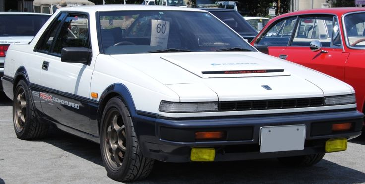

HORIZON RACING CLUB
A horizon racing club é um local de venda para entusiastas e também um clube de interação...
Mais sobre o motor mais vendido do nosso site:
Motor RB Nissan é um motor térmico de combustão interna de automóvel, gasolina quatro tempos, seis cilindros em linha de 2,0 a 3,0 litros de cilindrada projetado pela Nissan. É derivado do Nissan L20A de seis cilindros, que tem o mesmo diâmetro e curso no modelo RB20. Cada motor RB possui um bloco de motor feito de uma liga de ferro fundido e uma cabeça de cilindro de alumínio. As versões SOHC são equipadas com 2 válvulas por cilindro e as versões DOHC têm 4 válvulas por cilindro com uma válvula por came. Todos os motores RB estão equipados com árvores de cames acionadas por correia. Os modelos Turbo têm um turboalimentador com intercooler (exceto motores SOHC RB20ET e RB30ET) e a maioria tem uma válvula de descarga (exceto quando instalada nos Nissan Laurels e Nissan Cefiros ) para reduzir a pressão repentina quando o controle do acelerador é fechado. Este motor foi fabricado em Yokohama, Japão . De acordo com algumas fontes, o nome "RB" refere-se a "Race Bred", embora isso seja contestado. Outras fontes dentro da Nissan explicam que "RB" significa "Resposta" e "Equilíbrio", em outras palavras, um motor dinâmico e equilibrado.
O RB26DETT N1 é uma versão modificada do motor RB26DETT, desenvolvido por Nismo (Nissan Motorsports) para o grupo A e grupo N corridas categoria . A Nismo descobriu que o motor RB26DETT padrão exigia muita manutenção para uso em corridas do Grupo A ou Grupo N e, portanto, projetou o bloco N1. A Nismo equilibrou o virabrequim com especificações mais altas do que o virabrequim original, já que o motor RB26DETT experimenta velocidades do motor entre 7.000 e 8.000 rpm . O motor também recebeu vias navegáveis melhoradas (ou tubos moldados no bloco do motor) no bloco do motor. Os anéis de pistão superiores também foram atualizados para 1,2 milímetros. Para o motor N1, os eixos de comando e turboalimentadores também foram aprimorados. Embora todas as versões do motor RB26DETT N1 usem turboalimentadores Garrett T25, as especificações dos turboalimentadores mudaram nas 3 gerações do motor RB26DETT N1 (R32, R33 e R34). As versões R32 e R33 usavam turboalimentadores T25 com rolamentos. O motor R34 RB26DETT N1 do R34 usava turbocompressores Garrett GT25 (que usam um rolamento de esferas e têm uma resposta muito mais rápida do que um rolamento devido ao atrito reduzido). A maior diferença entre os turboalimentadores usados no motor N1 e o motor RB26DETT padrão é que a turbina do turboalimentador é feita de aço, em vez de cerâmica, usada nos turboalimentadores RB26DETT padrão. Impulsores de cerâmica são muito incertos quando usados em altas temperaturas (como quando turbocompressores são usados em sobrepressão mais alta do que o estoque). O bloco do motor RB26DETT N1 Nismo emprega furos de 86 mm que podem ser retificados para 87 mm ou 88 mm . O bloco N1 é estampado com uma marca de identificação 24U, enquanto o bloco RB26DETT padrão é identificado com 05U. A unidade RB26DETT N1 é compatível com todos os compartimentos do motor Skyline GT-R.

Novo Nissan Skyline R32 GTR 1993 novo de fabrica em nosso estoque de vendas. Veja mais...

Novo Toyota Supra JZA80 1998 modificado em nosso estoque de vendas. Veja mais...

Novo Honda NSX Type S 1995 novo de fabrica em nosso estoque de vendas. Veja mais...
Novo raríssimo Tommy Kaira ZZII 2000 novo de fabrica em nosso estoque de vendas. Veja mais...

Novo Nissan Silvia S12 Turbo RS-X 1986 novo de fabrica em nosso estoque de vendas. Veja mais...